Identity
Active Directory Domain Services, two domain controllers, DNS, users, groups, Organizational Units, and Group Policy.
ENTERPRISE INFRASTRUCTURE • SOC • DETECTION ENGINEERING
I designed, built, secured, monitored, tested, and troubleshot a multi-network enterprise lab to develop practical experience across systems administration, network security, SIEM engineering, detection development, IDS monitoring, and security investigation.
Active Directory Domain Services, two domain controllers, DNS, users, groups, Organizational Units, and Group Policy.
pfSense routing, DHCP, NAT, segmentation, firewall policy, DMZ controls, and isolated testing networks.
Splunk Enterprise, Universal Forwarders, Windows Security Logs, Sysmon, pfSense logs, Snort IDS events, dashboards, and alerts.
Authentication monitoring, suspicious PowerShell, discovery activity, account changes, privileged-group changes, and security alerts.
Sysmon telemetry for process execution, network activity, command lines, and other endpoint security events.
Controlled testing with Kali Linux to validate firewall rules, IDS visibility, logging, and detection coverage.
The environment was built in VMware Workstation and separated into dedicated network segments to simulate enterprise infrastructure.
VMware Workstation
|
pfSense
|
---------------------------------------------------
| | | | |
SERVERS CLIENTS MANAGEMENT DMZ EXTERNAL
172.16.10.0/24 172.16.20.0/24 172.16.30.0/24
172.16.40.0/24
172.16.50.0/24
SERVERS
-----------------------------------------------------------
DC01 172.16.10.10 Active Directory / DNS
DC02 172.16.10.11 Secondary DC / DNS / GC
SPLUNK01 172.16.10.30 Splunk Enterprise
CLIENTS
-----------------------------------------------------------
Client 172.16.20.101 Domain workstation
EXTERNAL
-----------------------------------------------------------
Kali 172.16.50.10 Authorized security-testing host
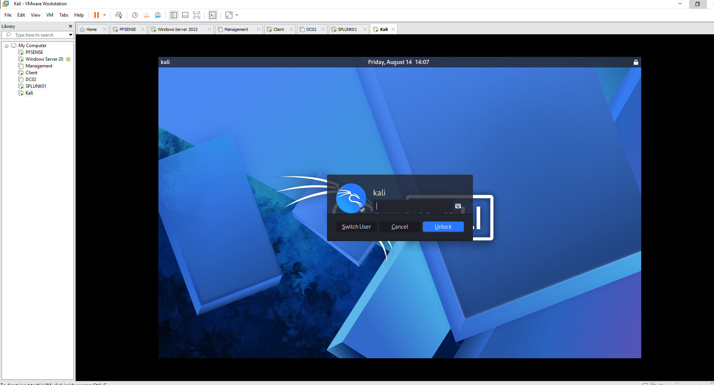
The Windows environment was built around the corp.local Active Directory domain.
A structured Organizational Unit hierarchy was created for administrative roles, users, servers, clients, management systems, service accounts, and business departments.
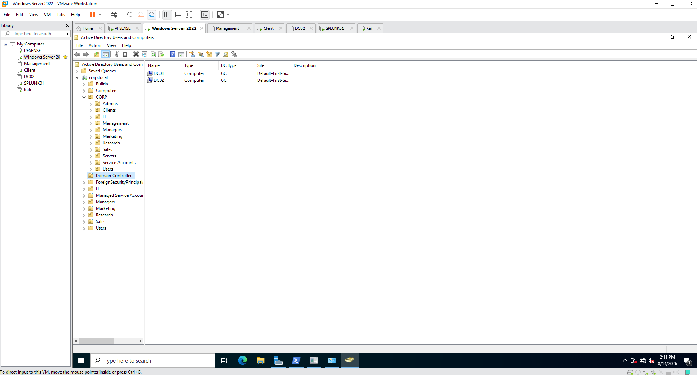

Group Policy was used to centrally manage domain security, administrative restrictions, endpoint configuration, mapped drives, and Splunk deployment tasks.
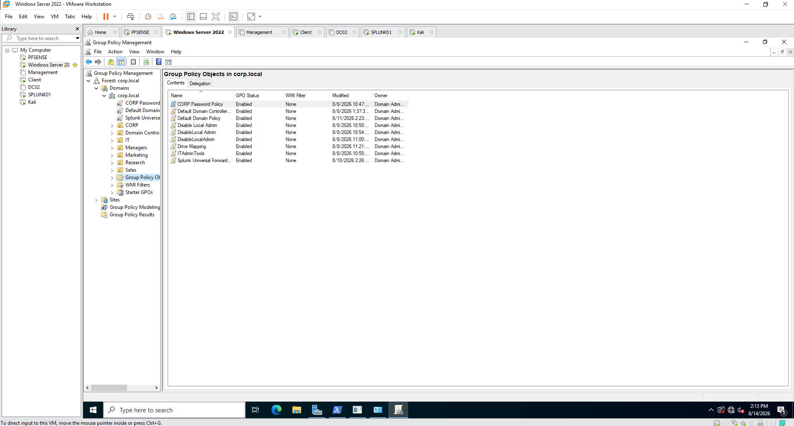
Windows Server file services were used for domain resources and deployment infrastructure.
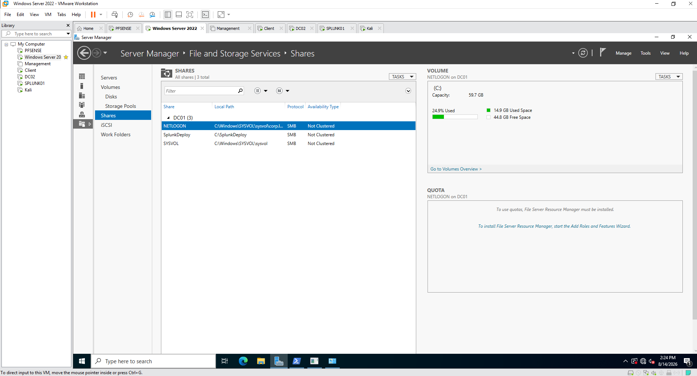
pfSense acted as the central router, firewall, DHCP service, and security boundary between the enterprise network segments.
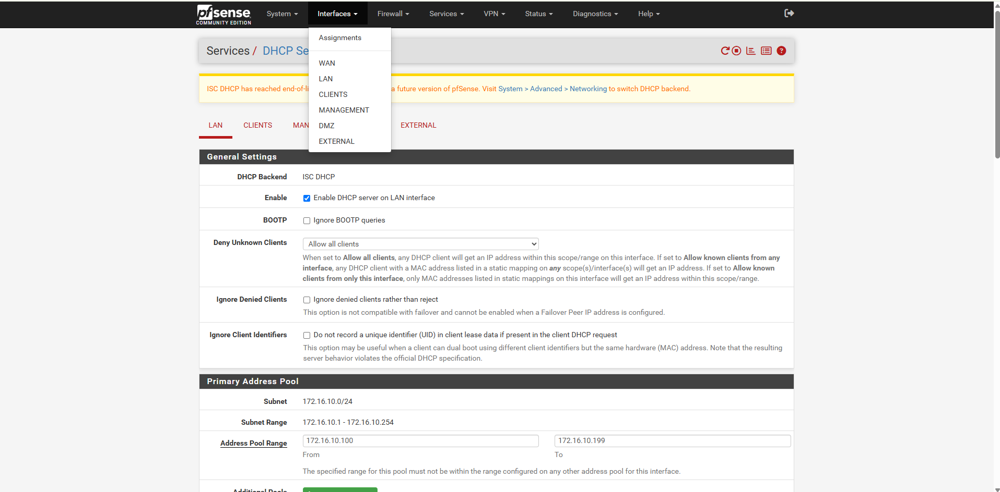
NETWORK SECURITY
pfSense was used as the central security boundary between the lab's network segments.
Firewall policies controlled traffic between trusted enterprise systems, client networks, management infrastructure, the DMZ, the external testing network, and the WAN.
The rules were designed around segmentation and controlled access instead of unrestricted inter-subnet communication.
The LAN provides connectivity for core server infrastructure while pfSense acts as the gateway between the server network and other security zones.
DMZ firewall rules restrict access toward internal client, management, and server networks while permitting only explicitly required traffic.
The external network provides an isolated location for authorized Kali Linux security testing.
Unsolicited inbound WAN traffic is denied by default, providing a restrictive external security boundary.
The LAN interface contains the core server-side network policy. pfSense provides gateway services for the segment while controlling traffic as it moves between security zones.
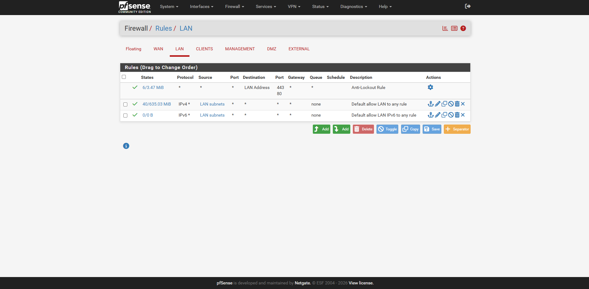
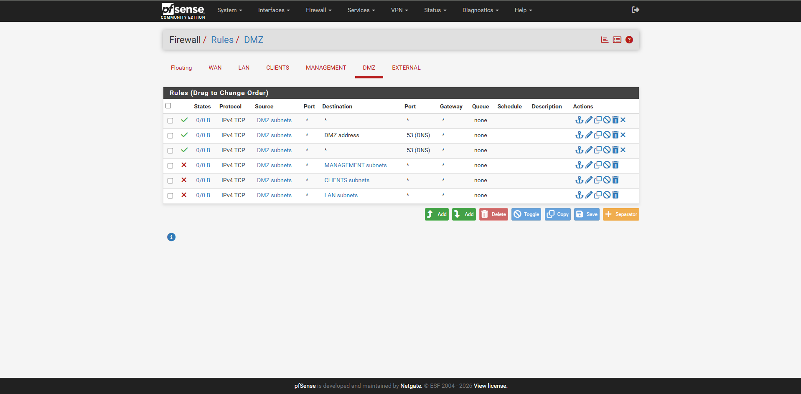
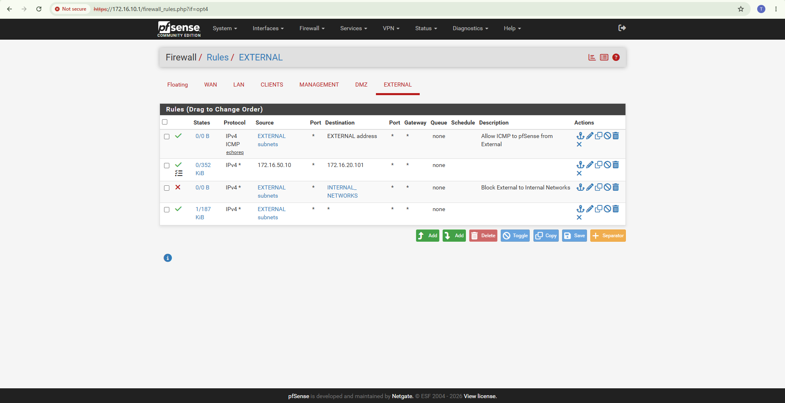
The WAN interface follows a default-deny inbound security model. Private and bogon source networks are blocked and no general inbound pass rule is exposed through the WAN.
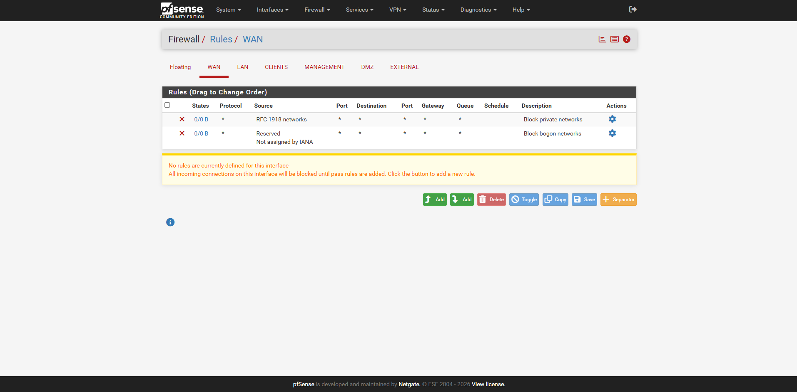
INTERNET / WAN
|
v
+-----------+
| pfSense |
| Firewall |
+-----------+
|
-------------------------------------------------
| | | | |
v v v v v
SERVERS CLIENTS MANAGEMENT DMZ EXTERNAL
172.16.10.0/24 172.16.20.0/24 172.16.30.0/24
172.16.40.0/24
172.16.50.0/24
| | | | |
+-------------+-------------+----------+--------+
|
Firewall Policy
|
Allow only permitted communication
|
Log security-relevant traffic
|
+------------+------------+
| |
v v
Snort IDS Splunk SIEM
| |
+------------+------------+
|
v
Detection & Investigation
This architecture allowed network activity to be evaluated at multiple defensive layers. pfSense enforced network policy, Snort inspected traffic for suspicious patterns, and Splunk centralized resulting telemetry for detection, correlation, and investigation.
Splunk Enterprise was used as the central SIEM platform for Windows, Active Directory, Sysmon, pfSense, and Snort telemetry.
I created the CORP SOC Security Overview to consolidate host activity, authentication events, Active Directory changes, detections, firewall activity, and IDS alerts.
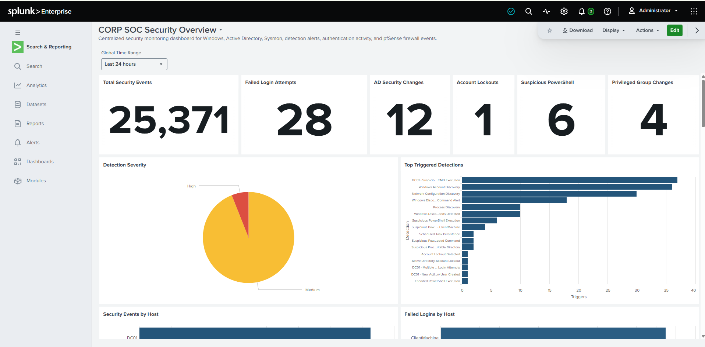
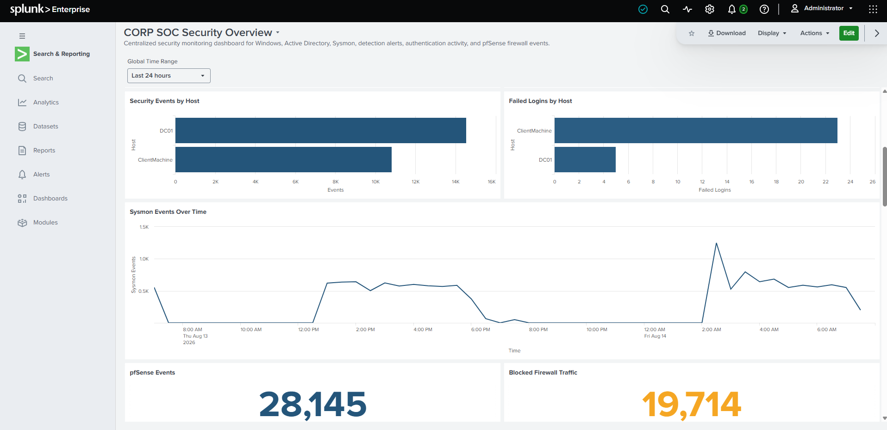
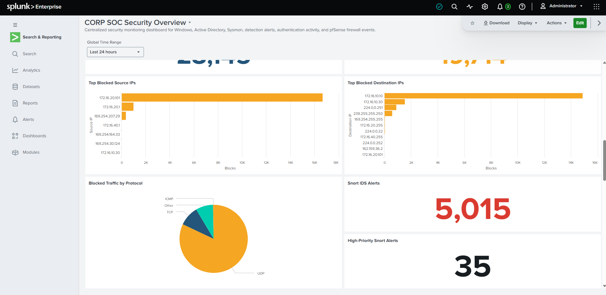
I created SPL searches and alerts to identify suspicious authentication, account activity, discovery behavior, PowerShell execution, and other security events.
Failed login attempts, account lockouts, Kerberos failures, NTLM failures, and suspicious authentication patterns.
New user creation, account enable/disable activity, local-account changes, and privileged-group membership changes.
Suspicious PowerShell, encoded PowerShell, CMD execution, and living-off-the-land binary activity.
Account discovery, process discovery, network configuration discovery, and Windows discovery commands.
Scheduled-task activity and other high-interest system changes.
Snort IDS detections, firewall blocks, reconnaissance, and suspicious network activity.
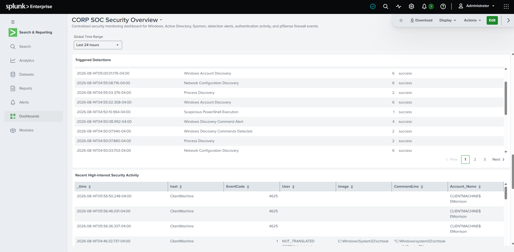
The project included developing and validating SPL rather than relying entirely on built-in dashboards.
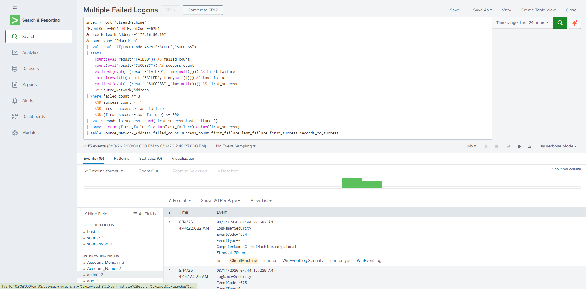
Detection searches were converted into reusable Splunk alerts so suspicious activity could be continuously evaluated.

Snort was deployed on pfSense to add network intrusion-detection telemetry to the lab.
IDS events were generated, reviewed directly in pfSense, and forwarded into Splunk for centralized investigation.
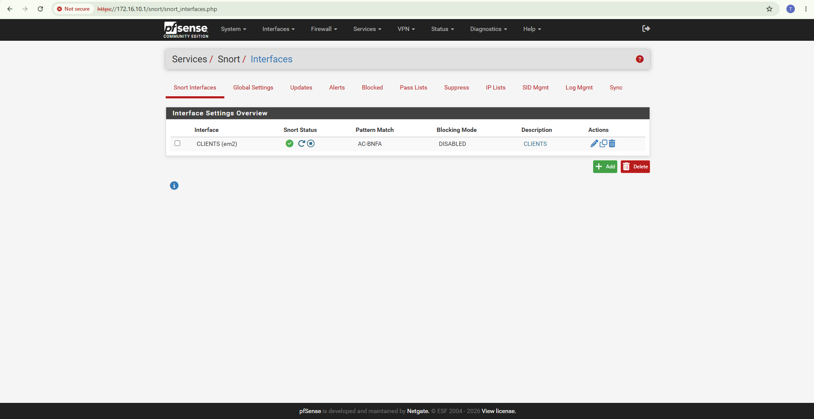
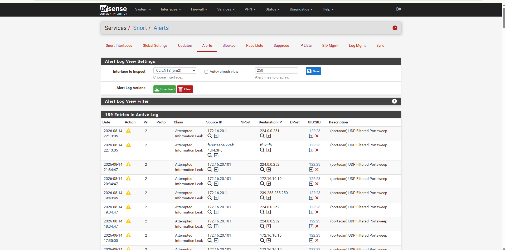
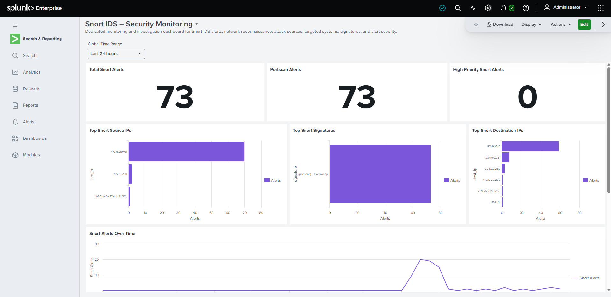
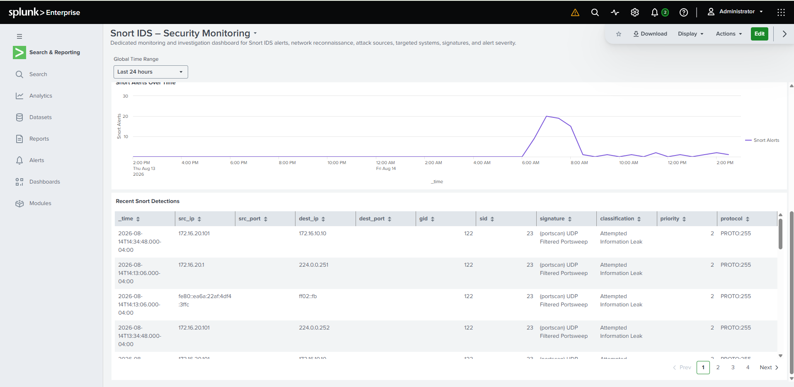
Kali Linux was used only inside the authorized lab environment to validate defensive controls and monitoring visibility.
Authorized Test Activity
|
v
Kali Linux
|
v
pfSense Firewall
|
+------> Firewall Logs
|
+------> Snort IDS
|
v
Windows / AD Systems
|
+------> Windows Security Events
|
+------> Sysmon Telemetry
|
v
Splunk Enterprise
|
+------> Searches
+------> Detections
+------> Alerts
+------> Dashboards
+------> Investigation
Building the environment required troubleshooting across multiple infrastructure and security layers.
Routing, IP addressing, VMware virtual networks, pfSense rules, NAT, DHCP, and connectivity.
Domain membership, DNS, Group Policy processing, service accounts, and replication.
Universal Forwarder connectivity, indexes, source types, log ingestion, searches, parsing, and dashboards.
Sysmon visibility, Windows event collection, pfSense syslog, and Snort IDS ingestion.
SPL validation, zero-result searches, alert conditions, event interpretation, and detection tuning.
VM memory allocation, service availability, system startup, and multi-VM lab performance.
Operational multi-domain-controller Active Directory environment.
Multiple security zones enforced through pfSense.
Windows, Sysmon, firewall, and IDS telemetry centralized in Splunk.
Custom searches, alerts, dashboards, and detection logic implemented.
Snort IDS deployed and integrated with Splunk monitoring.
Authorized testing confirmed firewall, logging, IDS, and SIEM visibility.
The GitHub repository contains additional implementation details, configuration evidence, troubleshooting notes, and supporting technical documentation for this project.